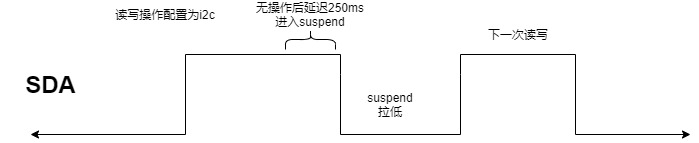

概述
高通平台i2c总线初始化和其他平台不同，休眠时会将pinctrl配置为gpio并且禁止上下拉，也就是SDA/SCL拉低了，看一下流程。
参考
Runtime PM详解
什么是Runtime PM Runtime PM (Runtime Power Management)翻译过来就是运行时电源管理。每个设备（包括芯片内部件）各自处理好自身的电源管理工作，在不需要工作的时候尽量进入低功耗状态，在需要工作时又重新起来。这样即使整个系统没有进入睡眠的情况下，设备自身也可以根据实际工作情况决定是否要进入低功耗状态，达到尽量省电的目的。
为什么需要Runtime PM system suspend需要很长时间完成，其中还可能出现失败。比如freeze task的时候。而suspend设备速度相对system suspend快很对，而且还不需要freeze task。当设备不忙的时候就进入自己的低功耗模式，这样一来每个device(包括CPU) 都做好自己的事，整个系统就达到最大节省能源。这时候突然想起了一句话”只要人人都献出一片爱，世界将变成美好的人间”。
Runtime PM历程
落实到代码上，当需要设备工作时，通过调用 pm_runtime_get_sync 让设备 runtime resume；当工作完成后，通过调用 pm_runtime_put 让设备 runtime suspend，伪代码如下：
发送数据：
senddata()
{
pm_runtime_get_sync()
do something ...
pm_runtime_put()
}
接收数据：
recvdata()
{
pm_runtime_get_sync()
do something ...
pm_runtime_put()
}
pm_runtime_get_sync 和 pm_runtime_put 会维护一个引用计数，pm_runtime_get_sync 会增加引用计数，pm_runtime_put 会减少引用计数，当引用计数为0时，才会真正让设备进入低功耗。
Runtime PM 的概念是比较直观的，对于某个设备来说，就是谁需要我工作，就 get 我，否则就 put 我。但是提供的函数接口有点多，本文的重点不在这里，就不一一介绍了，常用的如下：
pm_runtime_get_sync //请求
pm_runtime_put //释放
pm_runtime_use_autosuspend //启用auto-suspend
pm_runtime_set_autosuspend_delay //设置多久之后auto-suspend
pm_runtime_put_autosuspend //带auto-suspend的释放
pm_runtime_mark_last_busy //重置auto-suspend时间计数
pm_runtime_set_active/pm_runtime_set_suspended(设置设备的runtime运行状态)
Runtime PM 调用的时机，需要设备驱动仔细地处理，不然可能引发功耗问题或者系统异常。
如果控制的粒度太细，比如封装一个寄存器读写接口，每次去读写这个设备的寄存器时，都先 get 再 put，那未免代价太高了；
如果控制的粒度太粗，比如设备驱动起来后就一直 get，直到系统 suspend 才 put，那就和传统的电源管理差不多了，失去了 Runtime PM 的意义。
如果 get / put 接口没有成对调用，比如 get 的次数大于 put 的次数，那设备就进不了低功耗。
如果 put 的时机不太合适，导致设备下电后仍然有代码访问设备，那么就可能出现异常。
dts
scuba-qupv3.dtsi:
qupv3_se0_i2c: i2c@4a80000 {
compatible = "qcom,i2c-geni";
reg = <0x4a80000 0x4000>;
#address-cells = <1>;
#size-cells = <0>;
interrupts = <GIC_SPI 327 IRQ_TYPE_LEVEL_HIGH>;
clock-names = "se-clk", "m-ahb", "s-ahb";
clocks = <&gcc GCC_QUPV3_WRAP0_S0_CLK>,
<&gcc GCC_QUPV3_WRAP_0_M_AHB_CLK>,
<&gcc GCC_QUPV3_WRAP_0_S_AHB_CLK>;
pinctrl-names = "default", "sleep";
pinctrl-0 = <&qupv3_se0_i2c_active>;
pinctrl-1 = <&qupv3_se0_i2c_sleep>;
dmas = <&gpi_dma0 0 0 3 64 0>,
<&gpi_dma0 1 0 3 64 0>;
dma-names = "tx", "rx";
qcom,wrapper-core = <&qupv3_0>;
status = "disabled";
};
scuba-pinctrl.dtsi:
qupv3_se0_i2c_pins: qupv3_se0_i2c_pins {
qupv3_se0_i2c_active: qupv3_se0_i2c_active {
mux {
pins = "gpio0", "gpio1";
function = "qup0";
};
config {
pins = "gpio0", "gpio1";
drive-strength = <2>;
bias-pull-up;
};
};
qupv3_se0_i2c_sleep: qupv3_se0_i2c_sleep {
mux {
pins = "gpio0", "gpio1";
function = "qup0";
};
config {
pins = "gpio0", "gpio1";
drive-strength = <2>;
bias-pull-up;
};
};
};
代码分析
bengal_defconfig:
359:CONFIG_I2C_CHARDEV=y
360:CONFIG_I2C_QCOM_GENI=y
UM.9.15/kernel/msm-4.19/drivers/i2c/Makefilei2c相关的代码：
obj-$(CONFIG_I2C) += i2c-core.o
i2c-core-objs := i2c-core-base.o i2c-core-smbus.o
obj-$(CONFIG_I2C_CHARDEV) += i2c-dev.o
obj-y += algos/ busses/ muxes/
# busses/Makefile
obj-$(CONFIG_I2C_QCOM_GENI) += i2c-qcom-geni.o
UM.9.15/kernel/msm-4.19/drivers/i2c/busses/i2c-qcom-geni.c:
#define I2C_AUTO_SUSPEND_DELAY 250
static const struct i2c_algorithm geni_i2c_algo = {
.master_xfer = geni_i2c_xfer,
.functionality = geni_i2c_func,
};
static int geni_i2c_probe(struct platform_device *pdev)
{
gi2c->i2c_rsc.geni_pinctrl = devm_pinctrl_get(&pdev->dev);
if (IS_ERR_OR_NULL(gi2c->i2c_rsc.geni_pinctrl)) {
dev_err(&pdev->dev, "No pinctrl config specified\n");
ret = PTR_ERR(gi2c->i2c_rsc.geni_pinctrl);
return ret;
}
gi2c->i2c_rsc.geni_gpio_active =
pinctrl_lookup_state(gi2c->i2c_rsc.geni_pinctrl,
PINCTRL_DEFAULT);
if (IS_ERR_OR_NULL(gi2c->i2c_rsc.geni_gpio_active)) {
dev_err(&pdev->dev, "No default config specified\n");
ret = PTR_ERR(gi2c->i2c_rsc.geni_gpio_active);
return ret;
}
gi2c->i2c_rsc.geni_gpio_sleep =
pinctrl_lookup_state(gi2c->i2c_rsc.geni_pinctrl,
PINCTRL_SLEEP);
if (IS_ERR_OR_NULL(gi2c->i2c_rsc.geni_gpio_sleep)) {
dev_err(&pdev->dev, "No sleep config specified\n");
ret = PTR_ERR(gi2c->i2c_rsc.geni_gpio_sleep);
return ret;
}
if (of_property_read_bool(pdev->dev.of_node, "qcom,shared")) {
gi2c->is_shared = true;
dev_info(&pdev->dev, "Multi-EE usecase\n");
}
gi2c->adap.algo = &geni_i2c_algo;
ret = devm_request_irq(gi2c->dev, gi2c->irq, geni_i2c_irq,
IRQF_TRIGGER_HIGH, "i2c_geni", gi2c);
pm_runtime_set_suspended(gi2c->dev);
pm_runtime_set_autosuspend_delay(gi2c->dev, I2C_AUTO_SUSPEND_DELAY); //250ms后自动休眠
pm_runtime_use_autosuspend(gi2c->dev);
pm_runtime_enable(gi2c->dev);
ret = i2c_add_adapter(&gi2c->adap);
}
以上得知：
I2C适配器驱动的主要工作就是初始化i2c_adapter结构体变量。
然后设置i2c_algorithm中的master_xfer函数。master_xfer就是I2C适配器的传输函数，可以通过此函数来完成与IIC设备之间的通信。
完成以后通过i2c_add_numbered_adapter或i2c_add_adapter这两个函数向系统注册设置好的i2c_adapter。
master_xfer pm流程
以下就是i2c读写时的runtime pm流程：
pm_runtime_get_sync请求
i2c读写操作省略
pm_runtime_mark_last_busy 重置auto-suspend时间计数
pm_runtime_put_autosuspend 带auto-suspend的释放，目前设置的是250ms后休眠
以下是rumtime pm流程图：

static const struct i2c_algorithm geni_i2c_algo = {
.master_xfer = geni_i2c_xfer,
.functionality = geni_i2c_func,
};
static int geni_i2c_xfer(struct i2c_adapter *adap,
struct i2c_msg msgs[],
int num)
{
struct geni_i2c_dev *gi2c = i2c_get_adapdata(adap);
int i, ret = 0, timeout = 0;
gi2c->err = 0;
/* Client to respect system suspend */
if (!pm_runtime_enabled(gi2c->dev)) {
GENI_SE_ERR(gi2c->ipcl, false, gi2c->dev,
"%s: System suspended\n", __func__);
return -EACCES;
}
ret = pm_runtime_get_sync(gi2c->dev);
if (ret < 0) {
GENI_SE_ERR(gi2c->ipcl, true, gi2c->dev,
"error turning SE resources:%d\n", ret);
pm_runtime_put_noidle(gi2c->dev);
/* Set device in suspended since resume failed */
pm_runtime_set_suspended(gi2c->dev);
return ret;
}
//...省略...
pm_runtime_mark_last_busy(gi2c->dev);
pm_runtime_put_autosuspend(gi2c->dev);
gi2c->cur = NULL;
gi2c->err = 0;
GENI_SE_DBG(gi2c->ipcl, false, gi2c->dev,
"i2c txn ret:%d\n", ret);
return ret;
}
runtime PM
我们i2c注册了中断，所以不会跑noirq的pm函数：
以上当调用get时会调用geni_i2c_runtime_resume
释放后会调用geni_i2c_runtime_suspend，当配置打开dts中bool类型qcom,shared，只会调用关闭clk函数se_geni_clks_off，而se_geni_resources_off才会配置为gpio并拉低。
static int geni_i2c_resume_noirq(struct device *device)
{
struct geni_i2c_dev *gi2c = dev_get_drvdata(device);
GENI_SE_DBG(gi2c->ipcl, false, gi2c->dev, "%s\n", __func__);
return 0;
}
#ifdef CONFIG_PM
static int geni_i2c_runtime_suspend(struct device *dev)
{
struct geni_i2c_dev *gi2c = dev_get_drvdata(dev);
if (gi2c->se_mode == FIFO_SE_DMA)
disable_irq(gi2c->irq);
if (gi2c->is_shared) {
/* Do not unconfigure GPIOs if shared se */
se_geni_clks_off(&gi2c->i2c_rsc);
} else {
se_geni_resources_off(&gi2c->i2c_rsc);
}
GENI_SE_DBG(gi2c->ipcl, false, gi2c->dev, "%s\n", __func__);
return 0;
}
static int geni_i2c_runtime_resume(struct device *dev)
{
int ret;
struct geni_i2c_dev *gi2c = dev_get_drvdata(dev);
if (!gi2c->ipcl) {
char ipc_name[I2C_NAME_SIZE];
snprintf(ipc_name, I2C_NAME_SIZE, "%s", dev_name(gi2c->dev));
gi2c->ipcl = ipc_log_context_create(2, ipc_name, 0);
}
ret = se_geni_resources_on(&gi2c->i2c_rsc);
if (ret)
return ret;
if (gi2c->se_mode == UNINITIALIZED) {
int proto = get_se_proto(gi2c->base);
u32 se_mode;
if (unlikely(proto != I2C)) {
dev_err(gi2c->dev, "Invalid proto %d\n", proto);
se_geni_resources_off(&gi2c->i2c_rsc);
return -ENXIO;
}
se_mode = readl_relaxed(gi2c->base +
GENI_IF_FIFO_DISABLE_RO);
if (se_mode) {
gi2c->se_mode = GSI_ONLY;
geni_se_select_mode(gi2c->base, GSI_DMA);
GENI_SE_DBG(gi2c->ipcl, false, gi2c->dev,
"i2c GSI mode\n");
} else {
int gi2c_tx_depth = get_tx_fifo_depth(gi2c->base);
gi2c->se_mode = FIFO_SE_DMA;
gi2c->tx_wm = gi2c_tx_depth - 1;
geni_se_init(gi2c->base, gi2c->tx_wm, gi2c_tx_depth);
se_config_packing(gi2c->base, 8, 4, true);
qcom_geni_i2c_conf(gi2c, 0);
GENI_SE_DBG(gi2c->ipcl, false, gi2c->dev,
"i2c fifo/se-dma mode. fifo depth:%d\n",
gi2c_tx_depth);
}
GENI_SE_DBG(gi2c->ipcl, false, gi2c->dev, "i2c-%d: %s\n",
gi2c->adap.nr, dev_name(gi2c->dev));
}
if (gi2c->se_mode == FIFO_SE_DMA)
enable_irq(gi2c->irq);
GENI_SE_DBG(gi2c->ipcl, false, gi2c->dev, "%s\n", __func__);
return 0;
}
static int geni_i2c_suspend_noirq(struct device *device)
{
struct geni_i2c_dev *gi2c = dev_get_drvdata(device);
int ret;
/* Make sure no transactions are pending */
ret = i2c_trylock_bus(&gi2c->adap, I2C_LOCK_SEGMENT);
if (!ret) {
GENI_SE_ERR(gi2c->ipcl, true, gi2c->dev,
"late I2C transaction request\n");
return -EBUSY;
}
if (!pm_runtime_status_suspended(device)) {
GENI_SE_DBG(gi2c->ipcl, false, gi2c->dev,
"%s\n", __func__);
geni_i2c_runtime_suspend(device);
pm_runtime_disable(device);
pm_runtime_set_suspended(device);
pm_runtime_enable(device);
}
i2c_unlock_bus(&gi2c->adap, I2C_LOCK_SEGMENT);
return 0;
}
static const struct dev_pm_ops geni_i2c_pm_ops = {
.suspend_noirq = geni_i2c_suspend_noirq,
.resume_noirq = geni_i2c_resume_noirq,
.runtime_suspend = geni_i2c_runtime_suspend,
.runtime_resume = geni_i2c_runtime_resume,
};
static const struct of_device_id geni_i2c_dt_match[] = {
{ .compatible = "qcom,i2c-geni" },
{}
};
MODULE_DEVICE_TABLE(of, geni_i2c_dt_match);
static struct platform_driver geni_i2c_driver = {
.probe = geni_i2c_probe,
.remove = geni_i2c_remove,
.driver = {
.name = "i2c_geni",
.pm = &geni_i2c_pm_ops,
.of_match_table = geni_i2c_dt_match,
},
};
关闭资源函数：
/**
* se_geni_clks_off() - Turn off clocks associated with the serial
* engine
* @rsc: Handle to resources associated with the serial engine.
*
* Return: 0 on success, standard Linux error codes on failure/error.
*/
int se_geni_clks_off(struct se_geni_rsc *rsc)
{
int ret = 0;
struct geni_se_device *geni_se_dev;
if (unlikely(!rsc || !rsc->wrapper_dev))
return -EINVAL;
geni_se_dev = dev_get_drvdata(rsc->wrapper_dev);
if (unlikely(!geni_se_dev))
return -ENODEV;
clk_disable_unprepare(rsc->se_clk);
clk_disable_unprepare(rsc->s_ahb_clk);
clk_disable_unprepare(rsc->m_ahb_clk);
ret = geni_se_rmv_ab_ib(geni_se_dev, rsc);
if (ret)
GENI_SE_ERR(geni_se_dev->log_ctx, false, NULL,
"%s: Error %d during bus_bw_update\n", __func__, ret);
return ret;
}
EXPORT_SYMBOL(se_geni_clks_off);
/**
* se_geni_resources_off() - Turn off resources associated with the serial
* engine
* @rsc: Handle to resources associated with the serial engine.
*
* Return: 0 on success, standard Linux error codes on failure/error.
*/
int se_geni_resources_off(struct se_geni_rsc *rsc)
{
int ret = 0;
struct geni_se_device *geni_se_dev;
if (unlikely(!rsc || !rsc->wrapper_dev))
return -EINVAL;
geni_se_dev = dev_get_drvdata(rsc->wrapper_dev);
if (unlikely(!geni_se_dev))
return -ENODEV;
ret = se_geni_clks_off(rsc);
if (ret)
GENI_SE_ERR(geni_se_dev->log_ctx, false, NULL,
"%s: Error %d turning off clocks\n", __func__, ret);
ret = pinctrl_select_state(rsc->geni_pinctrl, rsc->geni_gpio_sleep); //配置gpio
if (ret)
GENI_SE_ERR(geni_se_dev->log_ctx, false, NULL,
"%s: Error %d pinctrl_select_state\n", __func__, ret);
return ret;
}
EXPORT_SYMBOL(se_geni_resources_off);